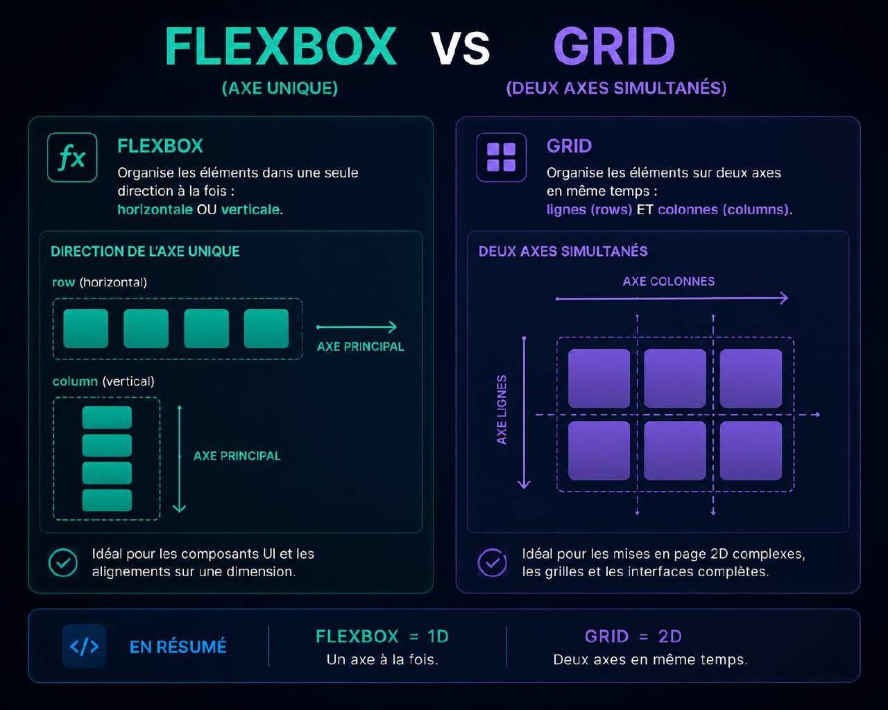
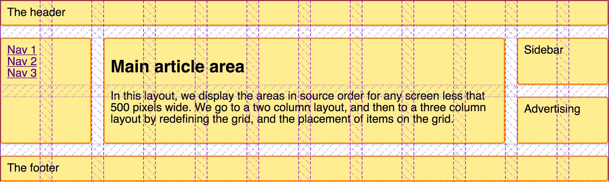

CSS Grid et Flexbox sont les deux outils de mise en page les plus puissants du CSS moderne. Pourtant, beaucoup de développeurs utilisent l'un à la place de l'autre par habitude. Voici enfin une réponse claire à la question que tout le monde se pose.

La règle d'or en une phrase
Flexbox est fait pour aligner des éléments sur un seul axe — une ligne ou une colonne. Grid est fait pour organiser des éléments sur deux axes en même temps — lignes ET colonnes.
C'est aussi simple que ça. Tout le reste découle de cette distinction. Si tu gardes ça en tête, tu feras le bon choix 90% du temps sans même y réfléchir.
Flexbox = 1 direction. Grid = 2 directions. Dans un vrai projet, tu utiliseras les deux dans la même page.
Quand utiliser Flexbox
Les cas où Flexbox gagne
Flexbox excelle quand tu veux aligner des éléments dans une seule direction et que leur nombre ou taille peut varier dynamiquement.
- Une navbar avec le logo à gauche et les liens à droite
- Un groupe de boutons côte à côte
- Des tags ou badges qui s'adaptent au contenu
- Un composant de carte avec titre, texte et bouton alignés
- Un formulaire avec label et input sur la même ligne
CSS.navbar {
display: flex;
justify-content: space-between;
align-items: center;
}
.btn-group {
display: flex;
gap: 12px;
flex-wrap: wrap; /* passe à la ligne si nécessaire */
}
Quand utiliser Grid
Les cas où Grid gagne
Grid excelle quand tu veux définir une structure précise et y placer des éléments — peu importe leur contenu. Tu penses d'abord à la grille, ensuite au contenu.
- Une page entière avec header, sidebar, contenu et footer
- Une galerie de photos en grille régulière
- Un dashboard avec des widgets de tailles différentes
- Un layout magazine avec des colonnes asymétriques
CSS.page-layout {
display: grid;
grid-template-columns: 240px 1fr;
grid-template-rows: 64px 1fr 80px;
min-height: 100vh;
}
.galerie {
display: grid;
grid-template-columns: repeat(3, 1fr);
gap: 24px;
}

CSS Grid vs Flexbox — Tutoriel complet · 9 min
Le comparatif complet
| Critère | Flexbox | Grid |
|---|---|---|
| Axes | 1D (ligne ou colonne) | 2D (ligne ET colonne) |
| Ce qui dirige | Le contenu | La structure |
| Idéal pour | Composants | Layouts de page |
| Responsive | Naturel et fluide | Précis et contrôlé |
| Courbe d'apprentissage | Simple | Modérée |
La vraie réponse n'est pas Grid OU Flexbox. C'est Grid ET Flexbox.
Conclusion
Dans un projet réel, tu utilises Grid pour le layout global de la page et Flexbox à l'intérieur de chaque composant. Les deux coexistent en permanence.
La prochaine fois que tu hésites, pose-toi une seule question : "Est-ce que j'organise des éléments dans une ou deux directions ?" Une direction → Flexbox. Deux directions → Grid.